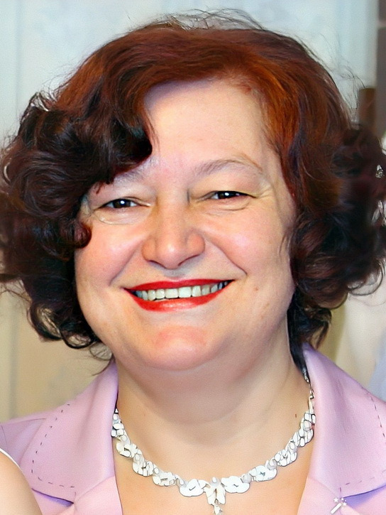

Ирина Ивановна Бобкова (Мартынец)

Девичья фамилия — Мартынец. Родилась 1 ноября 1955 г. в г. Енакиево Украинской ССР. Там в 1973 г. Ирина окончила школу № 15, а затем два года работала в жилищно-коммунальном управлении города. В 1975 г. она уехала в Орёл и поступила в филиал Всесоюзного заочного машиностроительного института, где училась на инженера-механика. В свободное от учёбы время Ирина работала в инструментальном цеху технологом лакокрасочного производства.
В 1979 г. Ирина вышла замуж за Анатолия Бобкова, с которым они росли по соседству на улице Панфилова в Енакиеве. Но уже вскоре ей пришлось вернуться в Орёл, чтобы продолжить учёбу. К началу 1981 г., когда подошло время родиться первенцу — Денису, — Ирина на время вернулась в Енакиево, но вскоре, оставив ребёнка с родителями, отправилась в Орёл для защиты дипломной работы. Лишь после этого, когда Ирина перебралась к мужу в Коммунарск, семья наконец воссоединилась. Там Ирина устроилась инженером на металлургический завод. В 1985 г. родилась дочь Анна. После декретного отпуска и вплоть до 1991 г. Ирина продолжала работать на заводе.
Затем семья вернулась в Енакиево, чтобы быть ближе к родителям. Там Ирина устроилась оператором котельного оборудования автобусного парка.
Со временем на том предприятии практически перестали платить зарплату. Такая же ситуация была и у мужа, поэтому в начале 1994 г. супруги решили уехать на заработки в Москву, где уже много лет проживала младшая сестра Ирины — Ольга (1959–2019). Та к тому времени уже стала директором предприятия в сфере жилищно-коммунального хозяйства. Она не только пригласила Анатолия и Ирину на работу, но и дала им жильё. Впрочем, труд, в основном связанный с уборкой и благоустройством дворов, был весьма тяжёлым. К тому же первое время Ирина с мужем находились в Москве без детей — их пришлось временно оставить на Украине. Лишь в начале 1995 г. удалось забрать к себе Анну, а в 1996 г. — Дениса. Ещё через некоторое время в Москву переехала и мать Ирины Ивановны — Евдокия Дементьевна. Таким образом все её родные постепенно перебрались в столицу. Впрочем, в 2018–2019 гг. семья, увы, вновь разделилась, когда все дети и внуки Ирины и Анатолия уехали жить за границу: семья Анны — в Германию, а семья Дениса — в США.
С 2010 г. Ирина Ивановна находится на пенсии. Около 20 лет она ухаживала за престарелой матерью, которая умерла в 2024 г. До настоящего времени Ирина Ивановна проживает в Москве. Любит читать, увлекается популярной медициной.